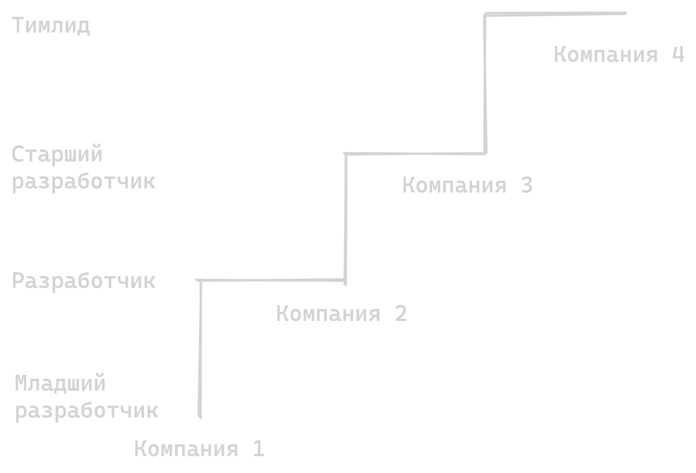
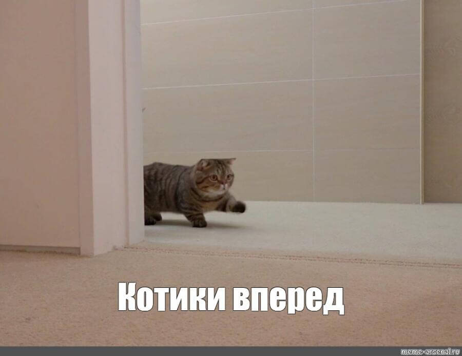

Неслучайный рост: как системно готовиться к оценке эффективности
Неслучайный рост: как системно готовиться к оценке эффективности
Андрей Смирнов @itsmirnov
Кто я?
Дисклеймер
🙊 Моё личное мнение
🤷🏻 Основанное на собственном опыте
Цель доклада
🛠️ Дать инструменты и подходы для карьерного роста
🧹 Развеять стереотипы о Performance Review
Зачем мне это?
Можно же просто сходить на собес
Карьерный рост ≠ смена работы

Performance Review
Почему боятся Performance Review?
Почему боятся Performance Review?
📦 Черный ящик
❓ Непонятные критерии оценки
🧾 Восприятие как формальности
😬 Страх негативного фидбэка
Что если взглянуть глазами бизнеса?
🪟 Прозрачность ожиданий
⚖️ Выравнивание стандартов между командами
💰 Планирование бюджета
🛡️ Снижение рисков
На PR тратится много денег и часов работы
Компании искренне верят в PR, сотрудники думают обратное
Почему это шанс для вас?
🔦 Это момент, когда ваш вклад становится максимально видимым
🛍️ Если подготовиться, PR превращается не в экзамен, а в витрину ваших достижений
Не всё зависит от вас
Калибровки
Как работают калибровки?
📏 Выравнивание оценок руководителями
🧩 Сравнение с идеальным профилем
🛡️ Ваш руководитель защищает вас
По факту есть три режима
оценки эффективности
Типы оценок эффективности
🚫 Нет никакого формального процесса
🗓️ Регулярные встречи, где вы сами защищаете свои достижения
🎛️ Калибровки, где вы косвенно влияете на результат
Что делать в любом режиме?
💬 Постоянно общаться с руководителем
📣 Давать аргументы для повышения
🚀 Проявлять инициативу
Руководитель ≠ Препятствие
Если с ним разговаривать
Ключевая задача: предоставить руководителю аргументы
Нужно понять, как и куда
вообще можно вырасти
Подготовить вопросы руководителю
📈 Какие критерии роста на следующий уровень?
🧠 Какие навыки развивать грядущий год?
👥 Как мой вклад воспринимается командой?
🏅 Есть ли проекты, где я могу проявить лидерство?
Обеспечить почву для повышения
✉️ Заранее отправить список достижений
🎯 Привязать их к целям компании
Где взять список достижений?
Система учёта достижений
Зачем всё фиксировать?
⏳ Чтобы не сидеть и не вспоминать: «А что я сделал за последние полгода?»
📊 Чтобы у руководителя были готовые факты и метрики для защиты вашей оценки
Лучше перебрать, чем недобрать
Почему лучше написать больше?
🗑️ Проще потом что-то выкинуть
🧩 Именно из мелочей детали складываются в картину
Формируйте картину вклада так, чтобы любой знал «вы молодец»
Примеры достижений
Frontend
🚀 Ускорение загрузки страниц
🎨 Оптимизация UX/UI
📉 Снижение обращений в поддержку
Backend
🛠️ Оптимизация запросов
🧱 Стабильность системы
🔔 Мониторинг и алерты
DevOps
🔄 Настройка CI/CD
🛡️ Безопасный деплой
💸 Оптимизация расходов на инфру
QA
📈 Рост покрытия автотестами
🐞 Сокращение багов в проде
🔁 Улучшение регресс-тестов
Team Lead
🌱 Рост джунов до мидлов
🐞 Снижение количества багов через code review
🗣️ Улучшение коммуникаций
Как это лучше документировать?
Как вести достижения?
📱 Заметки в телефоне или Google Doc
📊 Таблица с датами, задачами, результатами и подтверждениями
📎 Условный Notion, где можно прикреплять ссылки, скриншоты, отзывы
Что именно фиксировать?
📅 Дата, название проекта/задачи
🎯 Что сделал и к чему это привело (метрика или эффект)
📎 Доказательства (от графиков до писем)
Как часто фиксировать?
📆 Еженедельно (идеал)
🏃♂️ Ежеспринтово (оптимально)
🗓️ Ежемесячно (минимум)
Даже если ничего не нашли раз в неделю
Не делайте из трекера лишнюю бюрократию
Как правильно формулировать достижения?
Слабые формулировки
🥱 «Делал код-ревью» (звучит как обязанность, а не достижение)
🤝 «Помогал коллегам» (как именно и с каким результатом)
🧑💻 «Участвовал в проекте» (не ясно, какую ценность принёс)
Сильные формулировки
✅ «Провел 47 код-ревью (на 30% больше плана)»
🧑🏫 «Обучил 2 джуниоров (их продуктивность выросла на 40%)»
⏱️ «Оптимизировал процесс (сэкономил 15 часов в месяц)»
STAR
Формула STAR
🚨 Situation: Критичный баг в релизе
🧰 Task: Быстрое исправление без простоя
🛠️ Action: Моё решение и координация
🏆 Result: Спасены 5 миллионов убытков
Формулировки = Восприятие
Просто делаю таски из Jira, какие у меня могут быть метрики?
Где брать метрики?
👨💼 От тимлида или продукта («На какую метрику влияет моя задача?»)
📊 Внутренняя аналитика (Google Analytics, Grafana, дашборды)
🔍 Косвенные показатели (скорость отклика, количество багов, отзывы пользователей)
«Невидимая» работа
Менторство
Как измерить менторство
⏳ Сокращение времени адаптации
⚡ Улучшение скорости code review
Метрика есть у любой задачи. Что улучшает ваша работа?
Заметность в компании
Visibility
📽️ Делитесь результатами на демо
🎤 Выступайте на внутренних митапах
✍️ Пишите статьи в корпоративный блог
🙏 Публично благодарите коллег за помощь
Отзывы
💌 Сохраняйте благодарности в письмах или мессенджере
📝 Просите коллег оставлять короткий комментарий о вашей работе
📎 Приложите отзывы к своим достижениям
Ваши успехи должны быть известны в кулуарах до PR
Зафиксируем таймлайн подготовки
За 3 месяца до:
🎯 Сформулировать цель роста и критерии
🗂️ Завести систему учета достижений
🤝 Договориться о 1-1 с руководителем
За месяц до:
🏅 Выбрать самые знаковые достижения
📨 Запросить отзывы коллег из соседних функций
🧩 Провести пред-PR-синк с руководителем
За 2 недели до:
✨ Дополировать формулировки
🧺 Разложить всё аккуратно
🧾 Сделать одностраничник
Во время ревью:
🔢 Говорить фактами, а не эмоциями
📊 Показывать результаты в цифрах
🔗 Ссылаться на отзывы и артефакты
После ревью:
🧩 Разобрать обратную связь
📝 Зафиксировать свой план развития
📆 Договориться о промежуточной встрече через месяц
Если получил плохие оценки
Не стоит паниковать,
это не приговор
Что можно сделать?
🔍 Попросить разбор причин
👥 Запросить отзывы у соседних функций и заказчиков, чтобы разбить предвзятость одного источника
🛠️ Самому предложить план исправлений
Если не получается:
🔁 Смените задачи или проект внутри компании
🌟 Возьмите более заметную работу, где можно проявить себя
🧑🏫 Запросите ментора для ускорения роста
Иногда плохая оценка ведёт к блокировке внутренних переводов
Выводы
Пассивность = Застой
Что можно сделать уже сегодня?
🗂️ Создать простейший трекер достижений
📌 Зафиксировать 3 последних успеха
🗣️ Обсудить критерии роста с руководителем
Если начать тренироваться

Cледующий PR будет для вас не экзаменом, а возможностью
Спасибо! Ваши вопросы?
@itsmirnov
Обратная связь